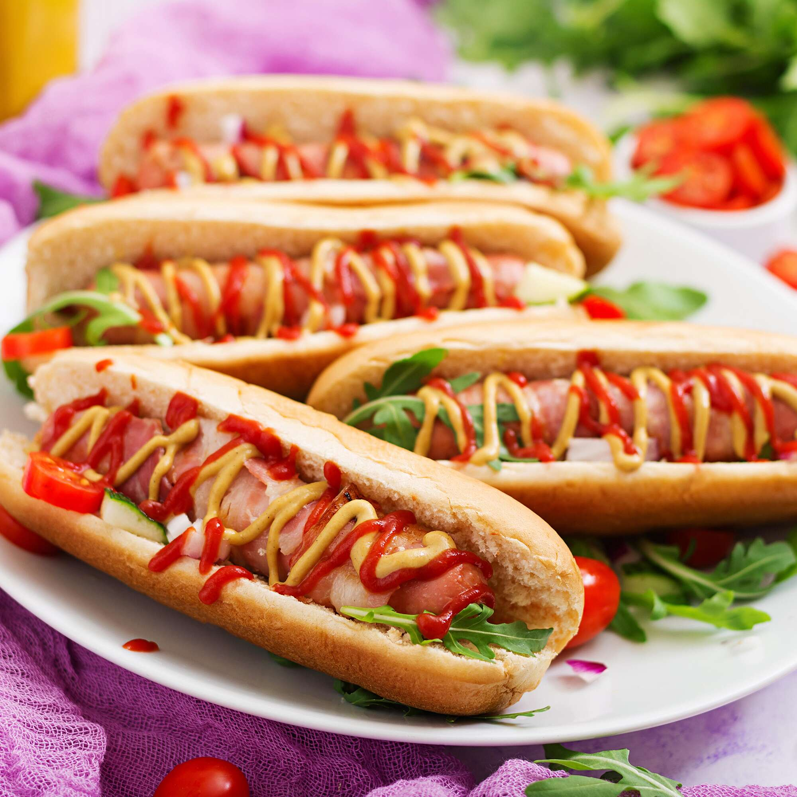

Hot Dog

Description
A hot dog is a food consisting of a grilled or steamed sausage served in
the slit of a partially sliced bun. The term hot dog can also refer to the
sausage itself. The sausage used is a wiener or a frankfurter. The names
of these sausages also commonly refer to their assembled dish.
Ingredients
- Butter
- Olive oil
- Finely sliced onions
- Dry cider
- Brown sugar
- Cider vinegar
- Mustard
- Mayonnaise
- Sausages
- Hot dog buns
Steps
- Melt the butter in a pan with the olive oil.
-
Add the onions and a pinch of salt and fry for 25-30 mins or until
caramelized.
-
Add the cider and simmer until reduced. Stir in the sugar and vinegar.
- Mix the mustard with the mayonnaise.
- Cook the sausages following pack instructions.
- Split the hot dog buns and fill each with a sausage.
- Top with the onions and the mustard-mayo.